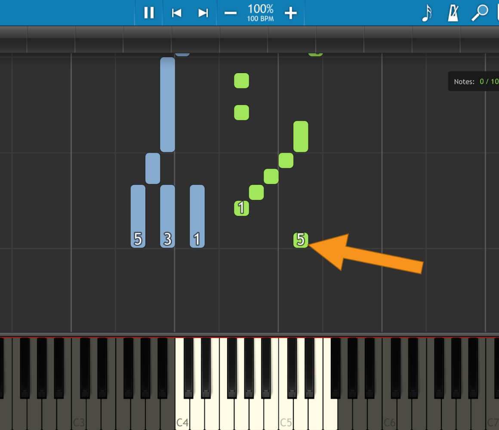
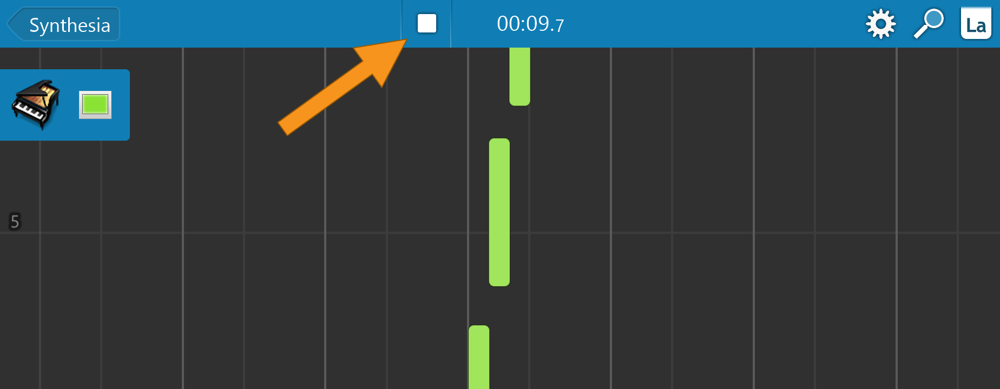

用 Synthesia 搭一条从练琴到发视频的完整流水线
把 Synthesia 嵌进日常练琴、录音和视频发布的工作流里，从每周练一首到产出一条能发的教学视频，到底能省掉哪些环节。
我每周要做一件事：挑一首钢琴曲目练熟，然后产出一条能发在视频平台上的简短教学演示。两年前这条链要手动跨三个工具，中间还穿插着无数次文件复制和格式转换。现在我把 Synthesia 插在了最中间的那个位置，整个流程稳定了下来。写这篇就是想把这条流水线拆给你看——每个环节具体接什么工具、哪里最容易断、以及这套组合什么时候反而不划算。
旧流程的断点
先说说以前怎么干的，以及卡在哪。
第一步是找谱子。那时候我习惯从 MIDI 库下载现成文件，然后用一个 DAW 把 MIDI 导进去，开着节拍器跟着弹。练熟了之后，用屏幕录制软件把 DAW 的播放画面抓下来，后期把声音换掉（因为 DAW 默认音色太塑料），最后再做一遍字幕和封面。整条线涉及：MIDI 下载站 → DAW（Audacity 或 REAPER）→ 录屏软件 → 剪辑软件。
这条线的问题不是工具多，而是每个工具之间不说话。MIDI 从 DAW 里导出来是一个文件，录屏文件又是另一个，后期配对的时候经常要手动对齐时间轴。有几次我录了两条轨，合并的时候发现差了两拍，又得重新找那个版本的 MIDI 重新导。加上换音源还要去下载 SoundFont、放到 DAW 的音色库里、重启 DAW 才能生效——练琴本身 30 分钟，这些准备工作经常要花掉两倍的时间。
还有个更烦的：DAW 里弹 MIDI 没有指法提示。我只能自己在五线谱里手动标数字，或者干脆凭感觉弹。弹到难的段落，手指不知道该怎么放，停下来翻纸质谱子又打断了节奏。
新流程：Synthesia 插在了哪
Synthesia官网 解决的核心问题是：它把 MIDI 文件变成了一个可交互的练习界面，而不是一个被动播放的音频轨。我的新流程变成了五步：
第一步，找 MIDI。 这步没变，还是 MIDI 库或自己扒谱。但现在下完的 MIDI 直接拖进 Synthesia 的歌曲文件夹，不用再经过 DAW 中转。Synthesia 自带的歌单会自动扫描文件夹里的 .mid 文件，支持搜索和分类，比 DAW 的工程管理直观得多。
第二步，配手位和指法。 这是 Synthesia 替我省最多事的环节。打开一首歌后，左手自动显示蓝色方块、右手绿色方块，方块上还带指法数字（1=拇指，5=小指）。如果默认的左右手分配不对，进设置里的声部面板就能切换。我以前在 DAW 里手动标指法要花 15 分钟，现在 Synthesia 默认给的指法已经够用了，偶尔调一下就行。

第三步，练琴。 旋律练习模式下，该我弹的琴键会亮彩色圆点提示，弹错了自动停，弹对了继续。速度可以调慢到 50%，段落可以单独循环。这部分就是 Synthesia 的核心价值——它不是个播放器，是个陪练。
第四步，录音。 这步用的是 Synthesia 10.7 之后内置的多轨录音机。进 Free Play 模式，顶部红色按钮开始录第一轨，节拍器自动打拍，弹完按停止键。录第二轨时，第一轨在背景里播放，对着叠录就行。最多六轨，每轨可以独立选乐器和颜色。弹得不齐的地方，保存时勾上「吸附到节拍网格」，音符首尾自动对齐。

这里有个细节我一开始没注意：录音中途退出 Free Play、甚至关掉软件，进行中的录音都会保留。有一次电脑自动锁屏重启，回来打开还能接着录——这个容错设计比我之前用过的任何 DAW 都省心。
第五步，出视频。 这里要说清楚一个重要的历史遗留问题：Synthesia 的官方 Video Creator 在 10.4 版本（2017 年）之后就停更了，而且必须和 10.4 版主程序配套使用，在新版上会报「必须先解锁」，10.4 版主程序可以从官方下载拿。所以现在我是用录屏软件抓 Synthesia 的全屏画面——开全屏播放，把下落音符、虚拟键盘、节拍器这些元素都录进去，音质直接用 Synthesia 里换过的 SoundFont 音色，不用再后期替换。如果想要纯乐谱视图，按 F5 就能关掉下落方块，只留五线谱，适合做读谱向的教学画面。
两个最容易断链的环节
这条流水线跑了大半年，我发现两个地方最容易出问题，提前说一下省得你踩坑。
第一个是蓝牙连接的延迟。我一开始图省事，用蓝牙 MIDI 连键盘和 iPad，结果打分模式下毫秒级误差会被扣分。后来查了Synthesia文档，蓝牙延迟确实略高于 USB，练习跟弹可以接受，独奏打分就别省这根线了。Windows 10 和 iPad 都原生支持蓝牙 MIDI，配对路径也不复杂，但如果你在意精度，USB 还是首选。
第二个是元数据缺失。网上下的 MIDI 文件大多没有作曲家、标签这些信息，Synthesia 的歌单虽然能扫到文件，但高级搜索（比如按作曲家搜）用不了。解决办法是用官方开源的元数据编辑器给 MIDI 补一个同名的 .synthesia 文件。这个工具一直在更新，GitHub 上能找到，做歌单分发或者课程包的话必须配。
效果与边界
量化一下：以前从挑谱子到出成品视频大概要两个小时，现在稳定在 45 分钟左右。省掉的时间主要是三个地方：手动标指法（省了 15 分钟）、DAW 和录屏之间的格式转换（省了 20 分钟）、后期替换音源（省了 10 分钟）。不是什么天翻地覆的提升，但每周都要做的事，每次省 75 分钟，一年就是 60 多个小时。
然后说边界——这套流程什么时候不划算。
Synthesia 内置的多轨录音机最多六轨，而且不是专业 DAW，没有效果器、没有混音台。如果你要做复杂的编曲（超过六轨、要加鼓点贝斯吉他），那 Synthesia 只能覆盖练琴和初步叠录，后期还是得回到 DAW。它适合的场景是：一首钢琴独奏或简单的双手协奏，产出一条教学演示视频。超出这个范围的复杂创作，别强行塞进 Synthesia。
还有一点：发布视频之前，曲目本身的版权是你的事。Synthesia 只管渲染画面和声音，商业曲目的公开传播需要另行授权，这一点和软件无关。
总的来说，Synthesia 在我这条流水线里的角色是：把「找谱子」和「练琴」这两个以前分离的环节合成了一个，同时用内置的录音机替掉了 DAW 的初步录音功能。它不是万能的，但在「练一首 → 录一版 → 发一条」这个量级上，目前没找到更顺手的组合。怕单源维护出岔子的话，我把这些整理好的资料分别放在了 GitHub、Gitee 和 GitCode，选你网络访问最顺的那个就行。